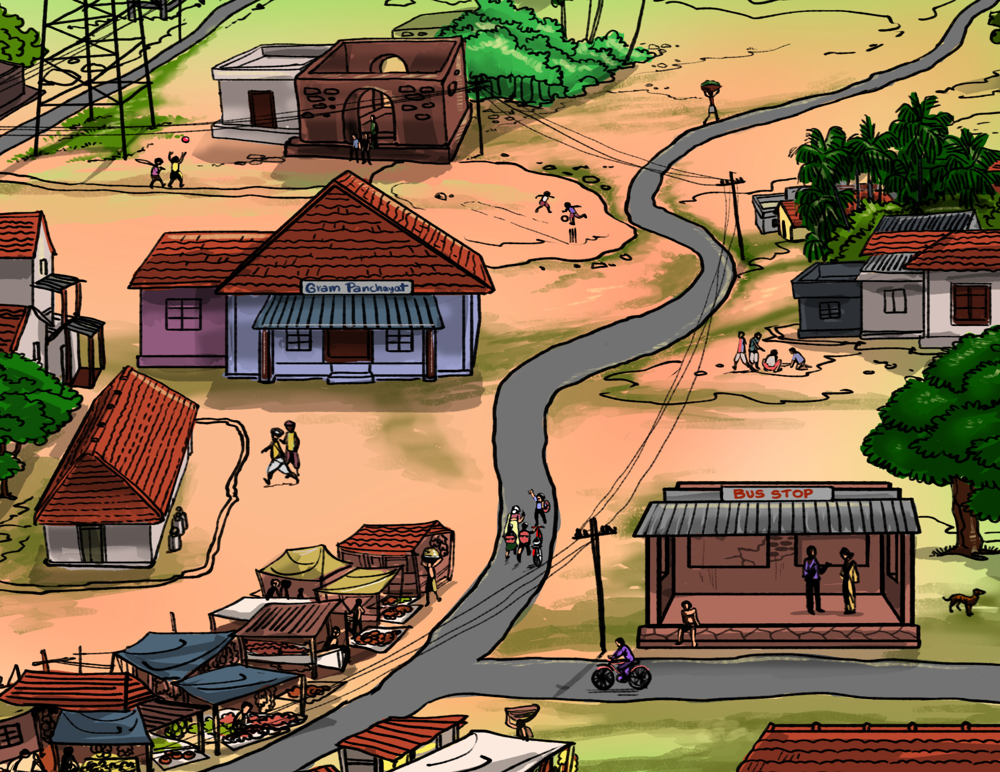

Story Time: Becoming Friends
Click on the button to listen to the story. Scroll down to read the transcript.

Click on the button to listen to the story. Scroll down to read the transcript.
Recap: In Unit 1, Lesson 1, we met Zo, his grandmother, Sahir and Kanasu.
Zo has moved to Chotapur to live with his grandmother and has made friends with Kanasu and Sahir at the bus-stop.
Everyone starts walking towards the grandmother’s house. Let’s see what they talk about as they walk home in Unit 1, Lesson 2.
Grandma: How are your parents, Zo? And what about your little brother? He was a toddler when I last saw him. He was just learning to walk.
Zo:They are all fine. Father works very hard. He goes early in the morning and returns late in the night. Mother is busy with housework all day and also takes care of little Ingo. Ingo is talking a lot now. Father says that he will come back for me after this project ends. He says that the city is no place for a young boy like me to study.
Grandma: I agree with him. And I am happy to have you here with me. At least I get to spend some time with you before I grow old.
Kanasu: Old? Aunty, you are as young as me! If we race together right now, I’m sure you will come first. Zo, where does your father work?
Zo: He works in the PWD, you know the Public Works Department?. I think they work on these projects related to building canals, roads,bridges…..those kind of things..
Kanasu: Oh! How interesting. Do you know that there is a canal that is coming up in this village?
Sahir: See those trucks by the side of the road? They are here to build the canal. They will soon start digging.
Kanasu: What is a canal?
Zo: It is a path for water to pass through.
Kanasu: Water from the river?
Sahir: Yes, the water from the river. But I am not sure why a canal is built. We could ask the teacher in school.
Grandma: That works well because, Zo, you will be in the same class as Kanasu and Sahir.
Kanasu: Oh wow! Will you need help with your work? How far have you studied in Maths? Our school is the best in the whole district. I think so. Do you agree Sahir?
Sahir: Yes,Yes... I agree Kanasu. No one can disagree with you. So, Zo, you will have to agree with her as well.
Zo: Ha ha ha, Kanasu and Sahir, both of you are fun to be around.
Grandma: Now, we take a right here. Can you see the gate in front, Zo? That is your new home. Come, Sahir and Kanasu. Join us for some tea. Kanasu can get her cycle fixed meanwhile.